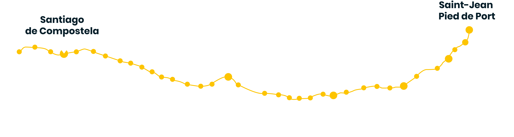

SI EMOCIONA
PENSARLO
IMAGÍNATE
HACERLO
¿Qué es?Camino de Santiago
El descubrimiento en Galicia, alrededor del año 820, la tumba del apóstol Santiago, fue uno de los acontecimientos más importantes de la edad Media.
Es primer Itinerario culturar Europeo y es Patrimonio de la Humanodad. El peregrino sabe que “la meta es el Camino” y goza de cada experiencia hasta culminar la ruta.
Uno de los símbolos más internacionales del Camino de Santiago es la flecha amarilla, pintada a brocha en calzadas, casas, vallas o árboles.
La vieira o concha, que podemos ver esculpida en multitud de iglesias o monumentos, y en la actualidad representada, junto a la fecha amarilla, en todos los indicadores del Camino.
Descubrelos diferentes caminos
El Camino de Santiago es una aventura dura pero que una vez terminada sabrás que ha sido lo mejor que has podido hacer.
Conocerás a muchas personas en cada una de las etapas y podrás disfrutar de un sinfín de conversaciones como también disfrutarás del silencio mientras te enamoras del paisaje
El Camino Francés es el Camino de Santiago de mayor relevancia histórica y el más seguido por los peregrinos. Se caracteriza por su variedad paisajística y su extraordinaria riqueza monumental.
Debe su origen a tres de las cuatro principales vías históricas de peregrinación que provienen del interior de Europa, las cuales confluyen en la pequeña villa de Ostabat, a pocos kilómetros de Saint Jean Pied de Port. La masificación es su mayor inconveniente.
Inicio: Saint Jean de Pied de Port | Longitud: 764 | Etapas a pie: 37
